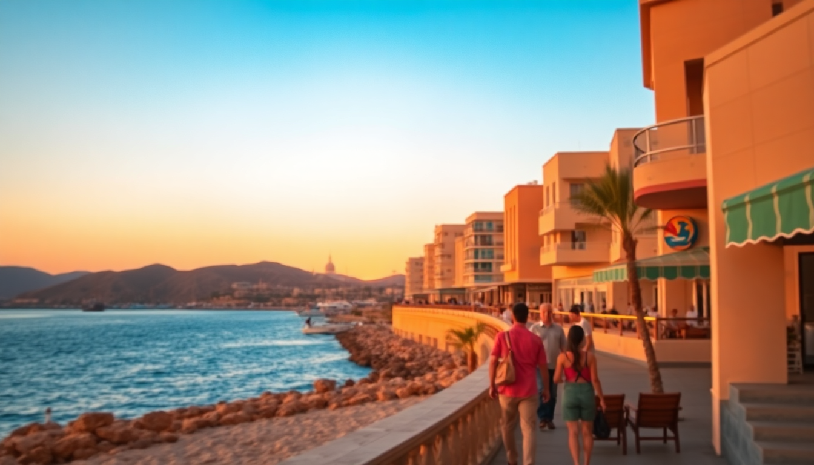

Egypt Red Sea Beaches: Hurghada, Sharm & Marsa Alam Guide

I spent three weeks bouncing between Hurghada, Sharm El Sheikh, and Marsa Alam, mostly on a mission to figure out which stretch of the Red Sea actually delivers on the hype. The water is absurdly clear everywhere, but the beach experience varies wildly. Here’s what I found.
Which beach in Hurghada is actually worth the trip?
Hurghada is the busiest of the three towns, and the main strip feels like a resort corridor. The public beaches near the marina are crowded and the water is often cloudy from boat traffic. Skip those. Instead, head north to El Gouna, a 30-minute drive. The beaches here are private but accessible if you grab a day pass at The Beach at Chedi El Gouna or Serenity Beach Club. The water is calm, the sand is raked clean, and the wind makes it tolerable even in July.
- El Gouna – Day passes at Chedi or Serenity cost around 15–25 USD. Worth it for the quiet.
- Mahmya Beach – On Giftun Island. A 45-minute boat ride from Hurghada marina. Snorkeling is excellent, but the beach itself is rocky. Bring water shoes.
- Sahl Hasheesh – A quieter resort area south of Hurghada. Oberoi Beach has good sand and fewer people.
- Hurghada Marina – Avoid for swimming. Fine for a walk and dinner, but the water is murky and the jet skis are annoying.
I found Mahmya Beach overrated for the price of the boat trip. The snorkeling was good, but the beach chairs are packed in tight. El Gouna was the better lazy-day option.
Is Sharm El Sheikh’s beach scene better than Hurghada?
Sharm has the advantage of the Ras Mohammed National Park right next door. The beaches inside the park are genuinely world-class. Marsa Bareika and Aqaba Beach have soft sand and immediate deep-water access for snorkeling. Outside the park, the main resort beaches in Naama Bay are fine but feel like a pool deck — loud music, vendors, and paid sunbeds.
- Ras Mohammed National Park – Entry is 10 USD. Go early (7 AM) to beat the crowds. Yolanda Reef is the best snorkeling spot I found in Egypt.
- Naama Bay – Convenient for food and drinks, but the beach is narrow and the water is busy with day-trippers.
- Sharks Bay – Quieter than Naama. Reef Oasis Beach Club has a decent stretch of sand and a house reef.
- Tiran Island – Boat trip only. The snorkeling is great, but the beach is just a strip of sand with no shade.
I stayed at Hotel Rixos Premium Seagate in Sharks Bay. The house reef there was better than anything in Naama Bay. If you want a proper beach day without a boat, book a hotel with its own reef access. It makes a difference.
What makes Marsa Alam different from the other two?
Marsa Alam is the outlier. It’s quieter, less developed, and the beaches are more raw. There are no big resort strips. Instead, you get long, empty stretches of sand with nothing but camels and the occasional Bedouin camp. The water here is the clearest I saw in Egypt, especially around Abu Dabbab and Dolphin House.
- Abu Dabbab Beach – Famous for dugongs and sea turtles. Entry is 5 USD. The beach is basic — no loungers, just sand and shade from palm fronds. Snorkel right off the shore.
- Dolphin House – A bay near Marsa Mubarak. You need a local guide or a boat to get there. Worth it if you want to swim with dolphins without a crowd.
- Qulaan Beach – South of Marsa Alam. Very remote. Camping is possible. No facilities.
- Sharm el Luli – A lagoon with white sand and turquoise water. It’s a 45-minute drive south of town. The beach is free, but there are no services. Bring everything you need.
I preferred Marsa Alam over Hurghada and Sharm for actual beach time. It’s not a party town. If you want nightlife, stay in Hurghada. If you want to sit on a quiet beach and actually see fish, go to Marsa Alam.
When is the best time to visit the Red Sea Riviera?
The Red Sea is a year-round destination, but comfort levels vary hard. I visited in late May, and it was already 38°C by noon. The water was warm enough to swim without a wetsuit, but the heat made long beach days exhausting.
- October to April – Best months. Air temperatures hover around 25–30°C. Water is 22–26°C. Snorkeling visibility is at its peak.
- May and September – Hot but manageable. Crowds are thinner. Prices are lower.
- June to August – Too hot for midday beach time. Locals don’t go to the beach between 11 AM and 4 PM. I tried it once. I regretted it.
- December to February – Cooler nights. Some windy days, especially in Hurghada. Water is still swimmable with a shorty wetsuit.
If you’re diving, the best visibility is September to November. For lounging on sand, October and April are ideal.
What are the best snorkeling and diving spots along the coast?
I’m not a diver, but I snorkeled at least a dozen spots. The Red Sea’s coral is healthier than anything I saw in the Caribbean. The key is getting away from the resort beaches.
- Ras Mohammed (Sharm) – Yolanda Reef is the standout. The coral wall drops off immediately. Currents can be strong. Go with a guide.
- Abu Dabbab (Marsa Alam) – Dugongs are rare, but I saw a turtle on every snorkel. The seagrass beds are full of life.
- Elphinstone Reef (Marsa Alam) – Only accessible by boat. Famous for oceanic whitetip sharks. I didn’t see any, but the coral was pristine.
- Giftun Islands (Hurghada) – Orange Bay and Paradise Island are the two main stops. Crowded, but the coral gardens are solid. Go on a morning trip.
- Tiran Island (Sharm) – Jackson Reef is the best of the four reefs. Strong currents. Not for beginners.
I booked a day trip with Dive In Marsa Alam for Elphinstone. The boat was small, the group was six people, and the lunch was better than any resort buffet. Worth the 80 USD.
Where should I stay in each city for beach access?
You don’t need a beachfront hotel in every city, but it helps. Here’s what worked for me.
- Hurghada – El Gouna: Chedi El Gouna is the best beach hotel in the area. Expensive, but the private beach is worth it. Budget option: Steigenberger Al Dau Beach Hotel in Sahl Hasheesh. Good beach, decent food.
- Sharm El Sheikh – Rixos Premium Seagate in Sharks Bay has a house reef and a quiet beach. Avoid Naama Bay hotels unless you want noise. Four Seasons Sharm is the luxury pick, but the beach is small.
- Marsa Alam – Jaz Marsa Alam is a solid mid-range option with direct beach access. Wadi Lahmy Azur Resort is more remote but has a stunning house reef. For true isolation, camp at Qulaan Beach or stay at Marsa Shagra Village (a dive camp with basic huts).
I spent two nights at Marsa Shagra Village. No AC, shared bathrooms, but you step out of your tent and into the water. Not for everyone. I loved it.
FAQ
Is it safe to swim in the Red Sea? Yes, but pay attention to currents and boat traffic. Most resort beaches have lifeguards. At remote beaches like Abu Dabbab or Sharm el Luli, there are no lifeguards. Don’t swim alone. Also, avoid touching coral — it’s fragile and some species are sharp.
Do I need a visa to visit Hurghada or Sharm El Sheikh? Yes. Most nationalities get a visa on arrival at Hurghada, Sharm, or Marsa Alam airports. It costs 25 USD in cash. If you’re staying only in the Sinai (Sharm, Dahab, Nuweiba), you can get a free 14-day Sinai-only stamp. This does not allow travel to Hurghada or Marsa Alam.
Which city has the best food near the beach? Hurghada has the most variety. Fish Market Restaurant on the marina serves fresh catch grilled on charcoal. In Sharm, Fares Seafood in Naama Bay is decent but tourist-priced. Marsa Alam has few options — your resort food will be the main choice. Mövenpick Resort Marsa Alam has a decent buffet, but don’t expect street food.
Conclusion
- Hurghada is best for variety and nightlife. Skip the public beaches and go to El Gouna or Sahl Hasheesh.
- Sharm El Sheikh wins for diving. Ras Mohammed National Park is non-negotiable. Stay in Sharks Bay for quieter beaches.
- Marsa Alam is the pick for solitude and raw nature. Abu Dabbab and Qulaan Beach are the highlights.
- Visit between October and April for comfortable weather and good visibility.
- Book hotels with house reef access if you want to skip the boat trips.